Capítulo 30
Conceptos básicos de geometría analítica
UNAMIPNCENEVAL
La geometría analítica combina el álgebra y la geometría mediante un sistema de coordenadas. Los puntos se representan con pares ordenados, las rectas mediante ecuaciones y las propiedades geométricas pueden estudiarse con procedimientos algebraicos.
En este capítulo estudiarás el plano cartesiano y cuatro conceptos fundamentales: la distancia entre dos puntos, el punto medio, la división de un segmento en una razón dada y la pendiente de una recta.
30.1 Plano cartesiano#
El plano cartesiano está formado por dos rectas numéricas perpendiculares llamadas ejes coordenados:
- el eje horizontal es el eje \(x\) o eje de las abscisas;
- el eje vertical es el eje \(y\) o eje de las ordenadas.
Los ejes se intersecan en el punto:
llamado origen.
Cada punto del plano se representa mediante un par ordenado:
donde:
- \(x\) es la abscisa o coordenada horizontal;
- \(y\) es la ordenada o coordenada vertical.
El orden de las coordenadas es importante.
En general:
Por ejemplo:
y:
representan puntos diferentes.
Los ejes coordenados dividen el plano en cuatro regiones llamadas cuadrantes, numeradas en sentido contrario a las manecillas del reloj:
- Cuadrante I \[x>0, \qquad y>0.\]
- Cuadrante II \[x<0, \qquad y>0.\]
- Cuadrante III \[x<0, \qquad y<0.\]
- Cuadrante IV \[x>0, \qquad y<0.\]
Un punto que se encuentra sobre uno de los ejes no pertenece a ningún cuadrante.
- Si \(y=0\), el punto está sobre el eje \(x\).
- Si \(x=0\), el punto está sobre el eje \(y\).
- Si \(x=0\) y \(y=0\), el punto es el origen.
La ubicación de los cuadrantes y de algunos puntos puede observarse en el siguiente plano:
30.2 Distancia entre dos puntos#
La distancia entre los puntos:
y:
está dada por:
La fórmula de la distancia proviene del teorema de Pitágoras.
Las diferencias:
y:
representan los cambios horizontal y vertical. Estos cambios forman los catetos de un triángulo rectángulo cuya hipotenusa es la distancia entre los puntos.
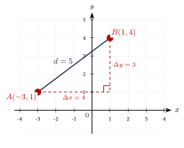
Encuentra la distancia entre:
Ver solución
Aplicamos la fórmula:
La distancia es:
Encuentra la distancia entre:
Ver solución
La posición de los puntos puede observarse en el siguiente plano:
El orden de los puntos no modifica la distancia:
Esto ocurre porque las diferencias aparecen elevadas al cuadrado.
Determina los valores de \(x\) para los que la distancia entre:
y:
es igual a \(5\).
Ver solución
Aplicamos la fórmula de la distancia:
Simplificamos:
Elevamos ambos miembros al cuadrado:
Aplicamos raíz cuadrada considerando ambos signos:
Primer caso:
Segundo caso:
Por tanto, los valores posibles son:
Si se solicita un valor estrictamente positivo, la respuesta es:
El número \(0\) no es positivo ni negativo.
Por tanto, entre las soluciones:
el único valor estrictamente positivo es:
Las dos posiciones posibles de \(A\) pueden representarse en el mismo plano:
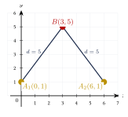
30.3 Punto medio#
El punto medio de un segmento es el punto que lo divide en dos segmentos de la misma longitud.
El punto medio del segmento cuyos extremos son:
y:
es:
Las coordenadas del punto medio son los promedios aritméticos de las coordenadas de los extremos:
y:
Encuentra el punto medio entre:
y:
Ver solución
Aplicamos la fórmula:
Por tanto:
El punto medio de un segmento es:
y uno de sus extremos es:
Encuentra el otro extremo \(Q(x_2,y_2)\).
Ver solución
Aplicamos la fórmula del punto medio en cada coordenada.
Para la coordenada \(x\):
Para la coordenada \(y\):
Por tanto, el otro extremo es:
30.4 División de un segmento en una fracción dada#
Sean:
y:
El punto \(P(x,y)\) situado a una fracción \(r\) del recorrido desde \(P_1\) hasta \(P_2\) tiene coordenadas:
En forma de par ordenado:
El valor de \(r\) determina la posición del punto:
- Si: \[r=0,\] entonces \(P=P_1\).
- Si: \[r=1,\] entonces \(P=P_2\).
- Si: \[r=\frac{1}{2},\] entonces \(P\) es el punto medio.
- Si: \[0<r<1,\] entonces \(P\) está entre \(P_1\) y \(P_2\).
- Si: \[r>1,\] entonces \(P\) está más allá de \(P_2\).
- Si: \[r<0,\] entonces \(P\) está sobre la prolongación anterior a \(P_1\).
Esta fórmula puede expresarse mediante vectores:
El vector:
indica el desplazamiento completo desde \(P_1\) hasta \(P_2\), mientras que \(r\) determina qué fracción de ese desplazamiento se recorre.
Encuentra el punto que se encuentra a una fracción:
del recorrido desde:
hasta:
Ver solución
Calculamos la coordenada \(x\):
Calculamos la coordenada \(y\):
Por tanto:
Encuentra el punto medio del segmento cuyos extremos son:
y:
utilizando la fórmula de división con:
Ver solución
Calculamos:
y:
Por tanto:
Este resultado coincide con la fórmula del punto medio.
La expresión “dividir un segmento en razón \(r\)” puede utilizarse con dos convenciones distintas.
En este capítulo, \(r\) representa una fracción del recorrido desde \(P_1\) hasta \(P_2\):
En otros textos, una razón interna puede escribirse como:
Antes de utilizar una fórmula, debe identificarse cuál convención emplea el problema.
30.5 División interna en una razón \(m:n\)#
Si un punto \(P\) divide internamente el segmento desde \(P_1\) hasta \(P_2\) en la razón:
entonces:
La fracción del recorrido correspondiente es:
Por tanto, ambas fórmulas son equivalentes:
30.6 Pendiente de una recta#
La pendiente de una recta mide su inclinación y representa la razón entre el cambio vertical y el cambio horizontal.
En símbolos:
La pendiente de la recta que pasa por:
y:
con \(x_1\neq x_2\), es:
La pendiente puede interpretarse como:
Por ejemplo:
significa que, al avanzar \(3\) unidades hacia la derecha, la recta sube \(2\) unidades.
Según el valor de \(m\):
- Si: \[m>0,\] la recta es creciente.
- Si: \[m<0,\] la recta es decreciente.
- Si: \[m=0,\] la recta es horizontal.
- Si el cambio horizontal es cero: \[x_2-x_1=0,\] la recta es vertical y su pendiente no está definida.
La pendiente de una recta vertical no es infinita.
La pendiente:
no está definida cuando:
porque se produciría una división entre cero.
Encuentra la pendiente de la recta que pasa por:
y:
Ver solución
Aplicamos la fórmula:
La pendiente es:
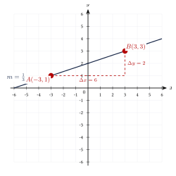
Encuentra la pendiente de la recta que pasa por:
y:
Ver solución
Aplicamos la fórmula:
Entonces:
Como la división entre cero no está definida, la pendiente no está definida.
La recta es vertical y su ecuación es:
La pendiente de una recta es:
La recta pasa por:
y:
Encuentra el valor de \(y\).
Ver solución
Aplicamos la fórmula de la pendiente:
Simplificamos el denominador:
Multiplicamos ambos miembros por \(6\):
Por tanto:
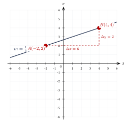
30.7 Comparación de pendientes#
Las cuatro posibilidades principales pueden compararse visualmente:
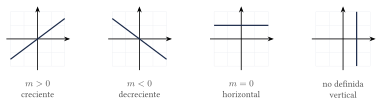
30.8 Relación entre pendiente y ángulo de inclinación#
Sea \(\alpha\) el ángulo que forma una recta no vertical con el eje positivo \(x\), medido en sentido contrario a las manecillas del reloj.
Entonces:
Si la pendiente es conocida, el ángulo de inclinación puede determinarse mediante:
tomando en cuenta la orientación y el cuadrante correspondiente.
30.9 Resumen de fórmulas#
Las fórmulas principales de este capítulo son:
Distancia entre dos puntos
\[d = \sqrt{ (x_2-x_1)^2 + (y_2-y_1)^2 }.\]Punto medio
\[M = \left( \frac{x_1+x_2}{2}, \frac{y_1+y_2}{2} \right).\]Punto situado a una fracción \(r\) del recorrido
\[P = \left( x_1+r(x_2-x_1), y_1+r(y_2-y_1) \right).\]División interna en razón \(m:n\)
\[P = \left( \frac{nx_1+mx_2}{m+n}, \frac{ny_1+my_2}{m+n} \right).\]Pendiente
\[m = \frac{y_2-y_1}{x_2-x_1}, \qquad x_1\neq x_2.\]
30.10 Ejercicios propuestos#
Encuentra la distancia entre:
Ver solución
Encuentra la distancia entre:
Ver solución
Determina el valor positivo de \(x\) para que la distancia entre:
y:
sea igual a \(10\).
Ver solución
Planteamos: \[10 = \sqrt{(x + 1)^2 + (10 - 2)^2} = \sqrt{(x + 1)^2 + 64}.\] \[100 = (x + 1)^2 + 64 \Longrightarrow (x + 1)^2 = 36.\] \[x + 1 = \pm 6 \Longrightarrow x = 5 \text{ o } x = -7.\] El valor positivo es \(x = 5\).
Encuentra el punto medio entre:
Ver solución
El punto medio de un segmento es:
y uno de sus extremos es:
Encuentra el otro extremo \(Q\).
Ver solución
Despejamos: \[3 = \frac{5 + x_2}{2} \Longrightarrow x_2 = 1,\] \[-4 = \frac{10 + y_2}{2} \Longrightarrow y_2 = -18.\] El otro extremo es \(Q(1, -18)\).
Encuentra el punto situado a una fracción:
del recorrido desde:
hasta:
Ver solución
\[x = \frac{-2 + 3(6)}{4} = \frac{16}{4} = 4,\] \[y = \frac{4 + 3(-2)}{4} = \frac{-2}{4} = -\frac{1}{2}.\] El punto es \(\left(4, -\dfrac{1}{2}\right)\).
Encuentra la pendiente de la recta que pasa por:
Ver solución
Encuentra la pendiente de la recta que pasa por:
Ver solución
La pendiente de una recta es:
La recta pasa por:
y:
Encuentra el valor de \(y\).
Ver solución
Planteamos: \[\frac{2}{3} = \frac{y - (-1)}{-10 - 2} = \frac{y + 1}{-12}.\] \[-8 = y + 1 \Longrightarrow y = -9.\]
Clasifica según su pendiente la recta que pasa por:
Ver solución
Como \(x_1 = x_2 = 1\), la pendiente es indefinida. La recta es vertical.